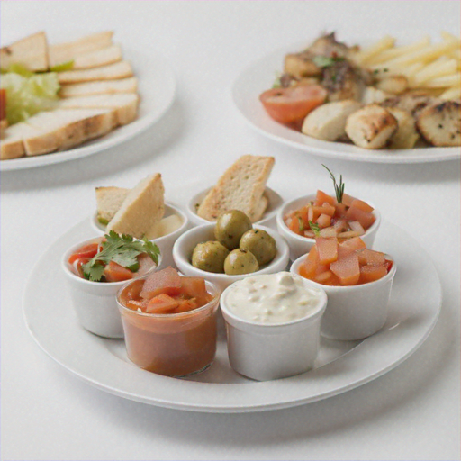
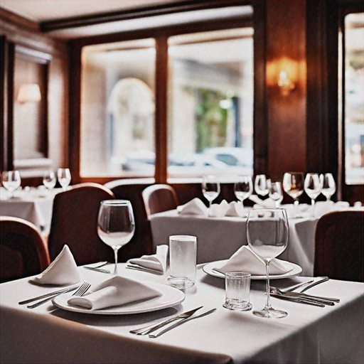

<section class="bg-white">
  <div class="container mx-auto px-4 py-8 flex flex-col items-center gap-y-8 lg:gap-y-[80px] lg:py-[80px]">
    <h2 class="font-bold text-[30px] xl:text-[56px] text-green-dark">¿Cómo funciona? Elige tu plato favorito.</h2>
    <div class="grid grid-cols-1 sm:grid-cols-2 gap-10 lg:grid-cols-3">
      <div class="p-[32px] flex flex-col items-center border-[5px] border-green-dark rounded-[10px] gap-y-4">
        
        <p class="text-center text-[20px] font-normal text-green-dark">Ofrecemos platos que combinan tradición y modernidad, diseñados para deleitar tu paladar.</p>
      </div>
      <div class="p-[32px] flex flex-col items-center border-[5px] border-green-dark rounded-[10px] gap-y-4">
        
        <p class="text-center text-[20px] font-normal text-green-dark">Disfruta de un ambiente acogedor mientras degustas nuestros sabrosos platos.</p>
      </div>
      <div class="sm:col-span-full flex justify-center lg:col-span-1">
        <div class="p-[32px] flex flex-col items-center border-[5px] border-green-dark rounded-[10px] gap-y-4 sm:max-w-[284px] md:max-w-[348px] lg:max-w-none">
          
          <p class="text-center text-[20px] font-normal text-green-dark px-[10px]">La excelencia de la cocina peruana se refleja en nuestros platos.</p>
        </div>
      </div>
    </div>
  </div>
</section>
